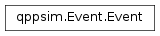

qppsim.Event module¶
Documentation¶
Module that provides the model for the simulation events.
-
class
qppsim.Event.Event(time, target, function_, args)[source]¶ Bases:
objectClass that models a simulation event. It consists of the time at which the event needs to the carried out, the target of the event, the function to execute on the target, and the arguments for the function.
The class is hashable and comparable.
-
args¶ Get the arguments to the event function.
-
function_¶ Get the event function to execute.
-
target¶ Get the event target.
-
time¶ Get the event time.
-